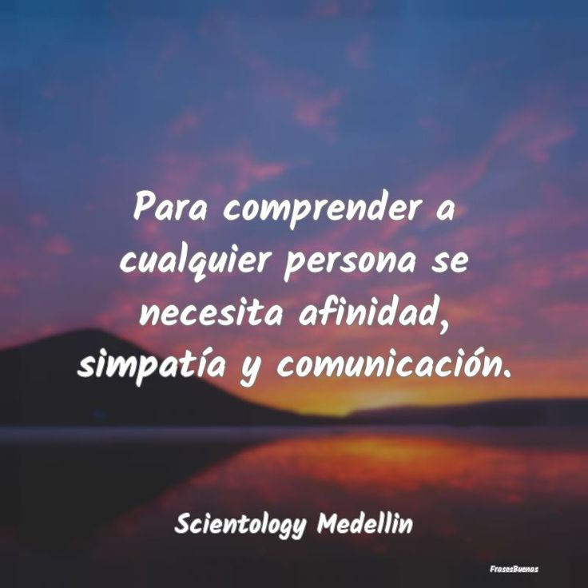
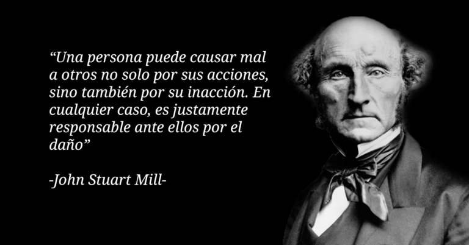

“Ponte de acuerdo con tu adversario pronto mientras estás con él en el camino no sea que te entregue
el juez y éste al Guardia y seas echado a la cárcel” Mateo 5:25
En toda relación personal van a existir conflictos los científicos sociales y la creencia popular
consideran al
conflicto como algo negativo que habría que evitar relacionado con la hoy psicopatología con los
desórdenes sociales y
la guerra el diccionario de la Real Academia española define el conflicto como combate lucha pelea y
finalmente con un
problema cuestión materia de discusión.
Pensamientos para reflexionar
La vida es el acuerdo al que llegamos entre lo que el ego desea hacer lo que la experiencia nos
dice que hagamos y lo
que los impulsa nos permitan hacer Bruce Clapton golfista profesional estadounidense
No hagamos acuerdos por temor y nunca temamos hacer acuerdos John F Kennedy ex presidente de los
Estados Unidos de Norteamérica
La comunicación efectiva no se trata solo de hablar, sino
también de escuchar.La escucha activa es una habilidad valiosa que permite una mejor comprensión
mutua, fortalece las relaciones y contribuye a resolver problemas y malentendidos de manera más
eficiente. La práctica de la escucha activa es esencial para establecer una comunicación más armoniosa y
significativa en nuestras interacciones con los demás.

Martin Luther King
Nació el 15 de enero de 1929 en Atlanta (Georgia). Emergió como un líder prominente en la
lucha por los derechos civiles de los
afroamericanos en la década de 1950.
Fue fundamental en la organización de la Montgomery Bus Boycott en 1955, que marcó el inicio
de su liderazgo en la lucha
contra la segregación racial.Uno de los momentos más icónicos de la vida de Martin Luther
King fue su discurso "I Have a Dream" en la histórica
Marcha en Washington por el trabajo y la libertad en 1963. En este discurso, King abogó por
la igualdad racial y el fin
de la discriminación.King fue un firme defensor de la resistencia no violenta como medio
para lograr el cambio social y político. Inspirado
por Mahatma Gandhi, abogó por la desobediencia civil pacífica como una forma de protesta.
La vida de Martin Luther King Jr. fue un testimonio de valentía, liderazgo y compromiso con
la justicia social, y su
legado sigue inspirando a las generaciones actuales en la búsqueda de la igualdad y la paz.
Principio De Comprender a las Personas
Entendimiento
“Puesto que el señor otorga sabiduría, cada una de sus palabras en un tesoro de conocimientos y
comprensión” Proverbios 2:6
Es la facultad humana de comprender, comparar juzgar las cosas o inducir y deducir otras de las que ya
se conocen.
Pensamientos para reflexionar
“Muchas personas cerrarán sus oídos ante el consejo, pero la mayoría abrirá sus ojos al
ejemplo.”
El comportamiento y las acciones ejemplares tienen más impacto en la
influencia sobre las
personas que simplemente dar consejos verbales. Muestra la importancia de ser un buen modelo a seguir y
cómo el ejemplo
puede inspirar y motivar a otros de una manera que las palabras solas pueden no lograr.
Principio De Comprender a las Personas
Valores
“Necio el hombre que dice para sí: No hay Dios.” Salmo 14:1
Es aquello que posee o quien se le atribuye cualidades positivas para desarrollar una determinada
actividad.
Pensamientos para reflexionar
“El comportamiento es un espejo en el que cada uno muestra su imagen.” Johann Wolfgang von
Goethe
El comportamiento es una manifestación visible de la verdadera naturaleza de una persona. La forma en
que alguien se
comporta en situaciones de la vida cotidiana revela mucho sobre quiénes son y cómo se relacionan con el
mundo que les
rodea. Es un recordatorio de que nuestras acciones hablan más alto que nuestras palabras y que nuestro
comportamiento es
la forma en que el mundo nos percibe y nos juzga.

Principio De Comprender a las Personas
Atención
“… todo hombre debe oír mucho, hablar poco y enojarse menos.” Santiago 1:19
El término atención significa cortesía urbanidad demostración de respeto y obsequio.
Pensamientos para reflexionar
“Sí como hay un arte de buen decir existe el arte del buen escuchar” Espicteto de Frigia
Es valioso saber cómo expresarse de manera efectiva, es igualmente
valioso aprender a
escuchar de manera activa y comprensiva. La escucha atenta es fundamental para establecer relaciones
significativas,
resolver conflictos y comprender a los demás. Como tal, se considera un "arte" que puede ser cultivado y
perfeccionado
para mejorar la comunicación y las interacciones humanas.
Principio De Comprender a las Personas
Empatía
“El amigo verdadero es siempre leal, y el hermano es para que nos ayude en tiempos de necesidad.”
Proverbios 17:17; Sabiduría 21.6
Empatía es “la identificación mental y afectiva de un de un sujeto con el estado de ánimo de otro”
Pensamientos para reflexionar
“La capacidad de colocarse en el lugar del otro es una de las funciones más importantes de la
inteligencia demuestra
el grado de madurez del ser humano.” Augusto Cury
“trata de comprender antes de ser comprendido.” Stephen Covey
“la empatía requiere tiempo la eficiencia es para las cosas no para las personas.” Stephen Covey
Covey nos recuerda que para desarrollar relaciones significativas y empáticas con las personas, es
esencial tomarse el
tiempo necesario para comprender sus necesidades, sentimientos y perspectivas. La eficiencia es valiosa
en muchas áreas
de la vida, pero no debe priorizarse sobre la empatía y el cuidado en nuestras interacciones con otros.